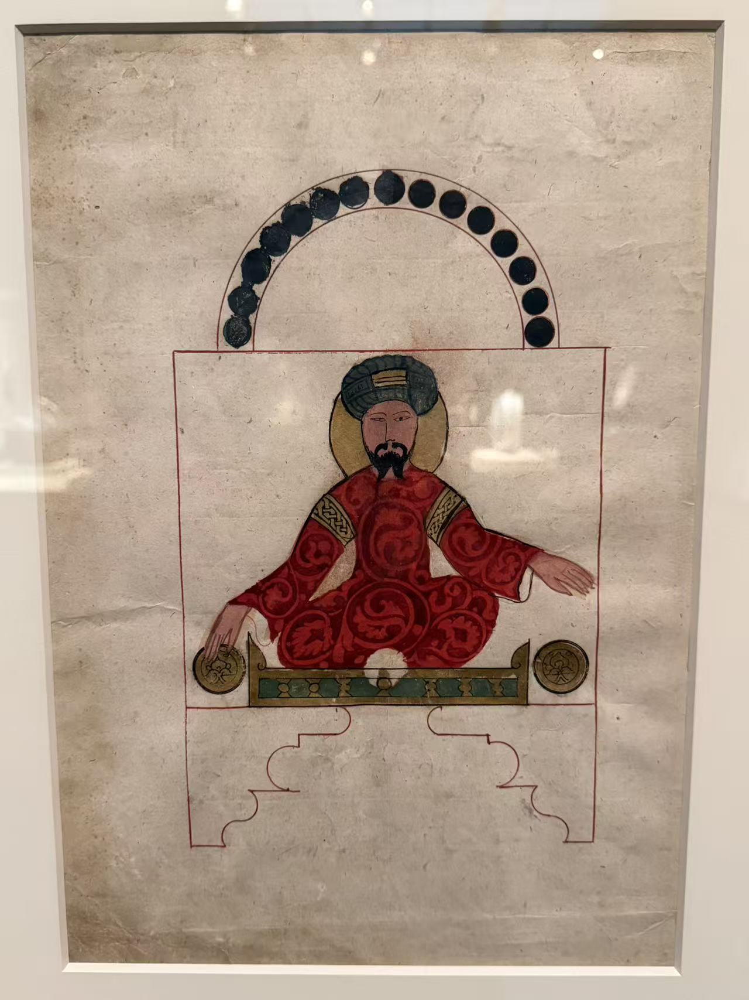
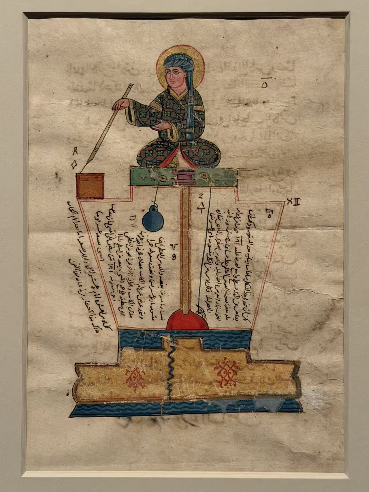

ISLAMIC ART / 001
贾扎里的奇妙机械
《奇妙机械知识之书》
The Book of Knowledge of Ingenious Mechanical Devices · Automata
我在弗利尔和休斯顿见过的三张书页：一位持壶的侍女、一位参与报时的男子，还有一位用笔尖指示时间的执笔人。沿着水路与人物的动作，读这些机械怎样被画在纸上。
3 张书页 · 弗利尔与休斯顿
1315年与1354年的抄本
 持壶侍女洗手装置
持壶侍女洗手装置
F1930.75，正面 · 1315年1315年12月（伊斯兰历715年斋月）
华盛顿 · 弗利尔美术馆
壶嘴伸出亭外，水落入左侧的盆；蓝色水路继续通向台座下方。

1354年（伊斯兰历755年）
华盛顿 · 弗利尔美术馆
红衣男子两手伸向两侧圆盘，上方一列深色圆形沿半圆排开，下方建筑只剩轮廓。

1315年12月（伊斯兰历715年斋月末）
休斯顿美术馆 · 萨巴赫收藏借展
长笔斜指左下，人物坐在容器上方；文字沿器壁内侧展开，几乎与机械结构融为一体。